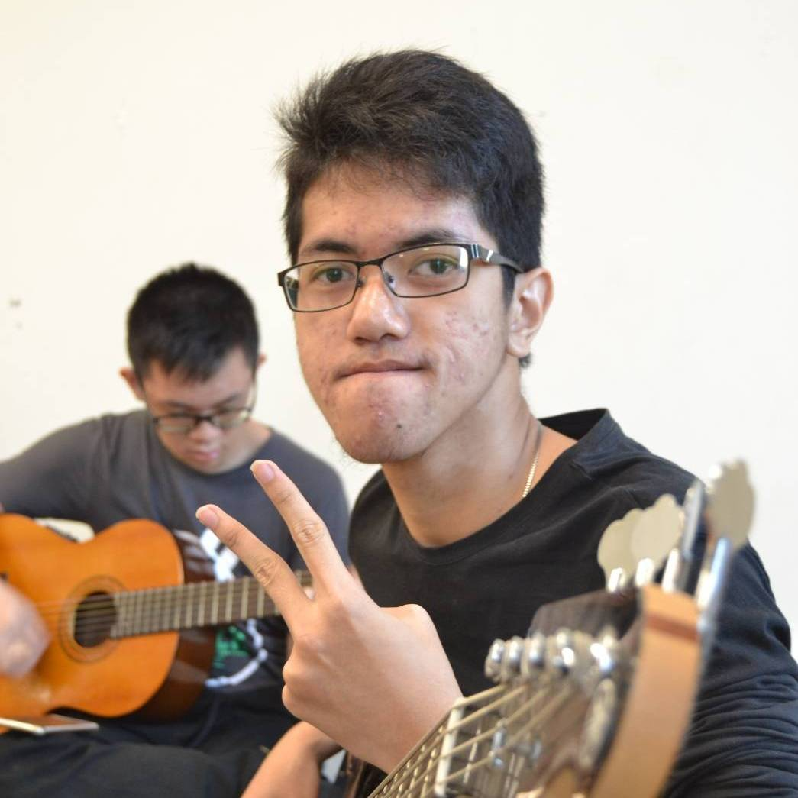

About Me

My name is Dwiki Arliman, you can call me Dwiki.
I am a student at Telkom University majoring in Informatics.
I want to be a Web Developer that focuses on creating design for website
or making any template for website.
People call this job a Front-end Developer.
I grew up in my beloved country, namely Indonesia,more specifically,
in the city of Bandung
which is also known as the city of flowers.
My favorite food is fried rice,
and also cake eaten with a cup of bitter black coffee.
My hobby is playing games and also likes relaxing places such as cafes
and a cool green garden.
After graduating I hope to be able to learn more deeply about Front-end Developer.
and working in a Web Development company so that it is a good career experience.
This is my first experience creating a personal blog and my first portfolio too.
I also hope that I can create a good website that will be liked by many people.
My Contact Below :